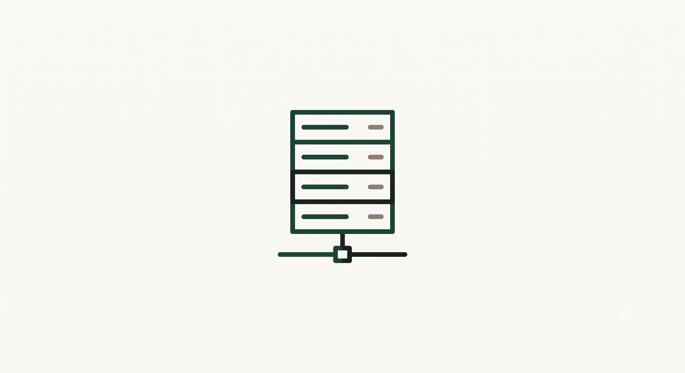
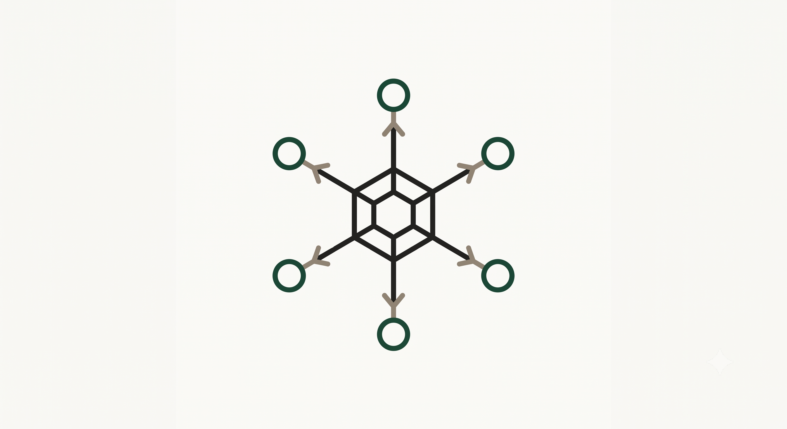
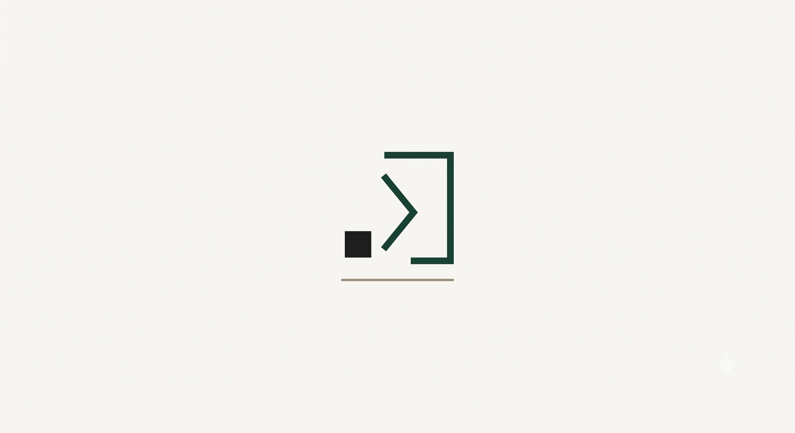

Modularity evidence

Real-Time Order Management System
A platform that centralizes cafeteria operations by connecting point-of-sale systems with kitchen and bar displays in real time — so an order taken at the counter appears on the kitchen screen the instant it's placed.

Discussion Forum API
A secure REST API for managing forum topics, with authentication and database persistence handled end to end.

Interactive Literary Manager
A console application that manages a literary database by consuming the Gutendex API — turning an open book catalog into a queryable local dataset.
A console/desktop app for real-time currency conversion, integrating an external REST API and handling JSON serialization with Gson and Jackson. View repository →
I'm happy to go through the architecture, the trade-offs, or the code itself.
Message me